4 Results
In this chapter, the results of each testing task outlined in Chapter 3 are presented individually, beginning with a review of the descriptive statistics reflecting the raw accuracy rates of responses. The descriptive statistics of the empirical results displayed in the boxplots indicate the distribution of participants’ means. Following this, the outcomes of the inferential statistical analyses are reported. The data were analyzed using mixed-effects logistic regression models implemented in R through the lme4 package version 1.1-35.3 (Bates et al. 2015) and the emmeans package version 1.10.1 (Lenth et al. 2019), in addition to being plotted with the ggeffects package version 1.5.2 (Lüdecke, 2018). In all three tasks, the dependent variable is the participants’ accuracy in the forced-choice tasks, treated as a binary variable coded as 0 (incorrect) and 1 (correct). The independent fixed variables in the analysis include training conditions in 3 levels (Alt1st=Alternating1st, NonAlt1st= Non-Alternating1st, Mix=Mixed), trial types in 4 levels (itemB-A=Basic-Alternating, itemB-NA=Basic-Non-Alternating, itemAltlt=Alternating, itemNonAltlt=Non-Alternating), and item familiarity in 2 levels (F=Familiar, H=Held-out). Additionally, all models incorporated random intercepts for both participants and items, random by-participant slopes for trial type and random by-item slopes for condition. To answer the research questions, mixed effects regression analysis was implemented to investigate statistically significant effects of the manipulated independent variables (training condition, trial type, and item familiarity or their interactions) on the accuracy of participants’ responses.
4.1 Task1 - Phrase Judgement
The first 2AFC task included 32 trials with the full phrases (word1+word2) as choices. To observe differences between the learning trajectories as hypothesized, it is necessary to compare the overall performance of participants in the 3 training conditions in this task. Figure 4-1 below plots overall accuracy by condition. The means (and SDs) of the participant means in the three conditions are: Alt1st 0.79 (0.12), NAlt1st 0.76 (0.10), and Mix 0.81 (0.08). The notches on the boxplots indicate the 95% confidence interval of the median and the small point on the box indicates the mean. The box represents the interquartile range, encompassing the two middle quartiles on either side of the median. By definition, this means that half of the participants fall within the box, while the other half lie outside of it. Notably, the overall mean accuracy as well as the 95% confidence interval ranges of the medians of the participants in all training conditions within this 32-trial task is above 0.69. This is a statistically above chance accuracy rate according to a right-tailed binomial test, with 0.05 alpha.
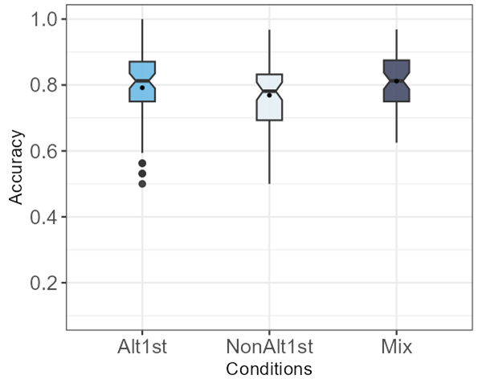
The trial types were categorized in 4 levels (total n 32 = 4 levels × 8 items): itemNonAlt, itemAltlt, itemB-A, itemB-NA. To better understand how the distribution of accuracy for participant responses in each training condition differ across the four trial types in this task and how trial types interact with conditions, it is important to compare the accuracy of participant responses to each trial type within the three conditions. As can be seen in the boxplots in Figure 4-2, for participants in all conditions, the itemB-A and itemB-NA (two boxes on the right) have similar distributions and their means are above 0.8 but their notch areas do not overlap with the itemAlt and itemNonAlt (two boxes on the left). The corresponding means (SDs) of each condition within the 4 trial types is also presented in Table 4-1 along with an example item (to see more examples, refer to Tables (3-6‒3-8) in Chapter 3). In the table, the highest mean value among the three conditions in each row (trial type) is underlined.
| Trial Type | Alt1st | NAlt1st | Mix |
|---|---|---|---|
| itemNonAlt (n= 8) [luæte] vs [luʃæte] |
0.71 (0.17) | 0.64 (0.19) | 0.75 (0.15) |
| itemAlt (n= 8) [ditugæʃ] vs [diugæʃ] |
0.78 (0.16) | 0.76 (0.17) | 0.77 (0.15) |
| itemB-A (n= 8) [meʃæte] vs [meʃtæte] |
0.82 (0.16) | 0.83 (0.14) | 0.85 (0.15) |
| itemB-NA (n= 8) [lubudol] vs [lutbudol] |
0.86 (0.16) | 0.84 (0.16) | 0.87 (013) |
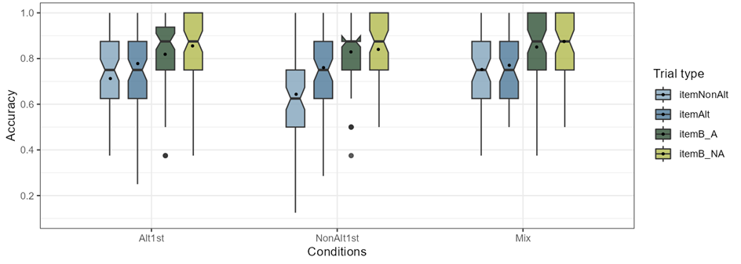
Figure 4-3 below shows the accuracy rates distributions of all participants in the three conditions to allow for a comparison of trials that contained familiar items (n=24) against held-out items (n=8). As can be seen in the boxplots, the distribution of the participant responses to familiar and held-out items overlap and their means are very close to each other for all conditions.
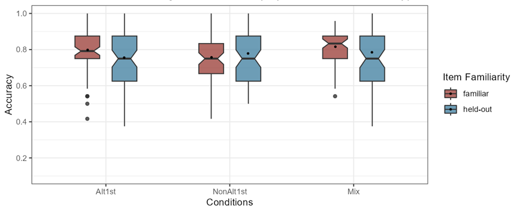
A mixed-effects logistic regression model with the following formula shown in (1) including 4 fixed effects in addition to 2 random effects of intercept and slope for trial type by subject and intercept and slope for condition by item was fitted to the data.
(1)
responses ~ condition + trial_type + condition:trial_type + item_familiarity +
(1 + trial_type | subject) + (1 + condition | item)
The contrasts were treatment-coded where training condition (Alt1st=ref, NAlt1st, Mix), trial type (itemNonAlt=ref, itemB-A, itemB-NA, itemAltlt) and item familiarity (familiar=ref, held-out) and the interaction of condition and trial type were considered as fixed effects each with a reference level. The results showed two significant coefficient estimates: as for the training conditions, when the other variables are held constant at their respective reference levels, that is on itemNonA trials, and familiar items, participants in Alt1st were significantly more accurate than NAlt1st condition (β=-0.48, SE=0.21, p=0.02), and as for the item types, when other variables are held constant on Alt1st condition and familiar items, the responses to NonAlt trials was significantly less accurate than B-NA trials (β=1.2, SE=0.53, p=0.04).
In the model comparisons with a chi-square likelihood ratio test, the model above (1) once compared to a simpler model without the fixed effect of condition (p= 0.02) and once without the fixed effect of trial type (p=0.007) was significantly different, but not significantly improved compared to a model without the item familiarity as a fixed effect. It is worth noting that comparing the model in (1) with a simpler model without interaction effects did not indicate significant improvement either. However, as it is important for the research question to know the between-condition differences, using the emmeans package theoretically relevant interaction differences were calculated. Table (4.2) shows all the comparisons based on the emmeans package calculated for all the interactions (estimated in differences in log odds), averaged over the item familiarity variable with Bonferroni adjustment. As it is shown in the pairwise comparisons, the participants in Mix and the Alt1st conditions are more accurate than NAlt1st across all trial types; although the only statistically significant comparison is within their responses to the NonAlt items, where participants in NAlt1st were significantly less accurate than the Mix condition (β=-0.67, SE=0.21, p=0.00). The full model summaries can be found in the Appendix B1.
| Contrast | Trial type | Estimate | SE | z.ratio | p.value |
|---|---|---|---|---|---|
| Alt1st - NonAlt1st | itemNonAlt | 0.48 | 0.21 | 2.31 | 0.06 |
| itemAltlt | 0.27 | 0.24 | 1.13 | 0.78 | |
| itemB_A | 0.05 | 0.25 | 0.21 | 1.00 | |
| itemB_NA | 0.28 | 0.28 | 0.99 | 0.96 | |
| Alt1st - Mix | itemNonAlt | -0.18 | 0.17 | -1.10 | 0.82 |
| itemAltlt | 0.11 | 0.20 | 0.57 | 1.00 | |
| itemB_A | -0.19 | 0.22 | -0.85 | 1.00 | |
| itemB_NA | -0.09 | 0.26 | -0.34 | 1.00 | |
| NonAlt1st - Mix | itemNonAlt | -0.67 | 0.21 | -3.20 | 0.00 |
| itemAltlt | -0.15 | 0.24 | -0.66 | 1.00 | |
| itemB_A | -0.24 | 0.26 | -0.93 | 1.00 | |
| itemB_NA | -0.37 | 0.29 | -1.27 | 0.61 |
These comparisons can be viewed in Figure 4.4 which illustrates the predicted probability of accuracy from the mixed-effects logistic regression model. These probability values are averaged over the levels of item familiarity using marginal means. As can be seen from the lowest point (colored in light blue), the accuracy of participants in the NonAlt1st condition differ with other conditions on NonAlt trials more strongly with a bigger effect size.
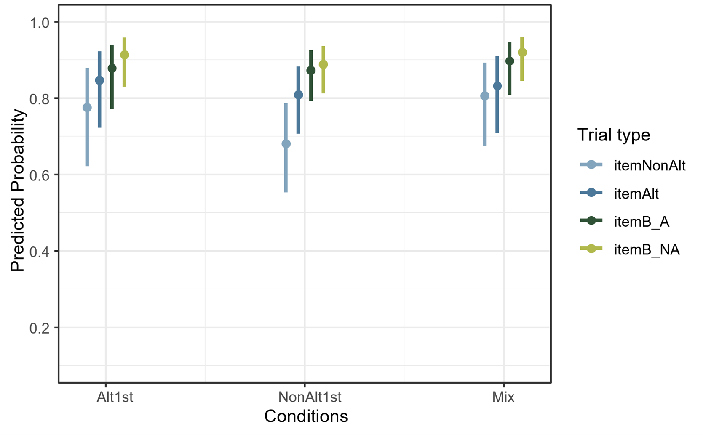
4.2 Task 2 - Familiar Segmentation
The second 2AFC task included 16 trials with the choices being between two potential word2s in the provided full phrase in the prompt. Similar to the previous task, to observe differences between the learning trajectories as hypothesized, it is necessary to compare the overall performance of participants in the 3 training conditions in this task. Figure 4.5 below plots overall accuracy by condition. The means (SD) of the participant means in the three conditions are almost at chance in this 16-trial task1: Alt1st 0.57 (0.15), NAlt1st 0.58 (0.16), and Mix 0.62 (0.17).
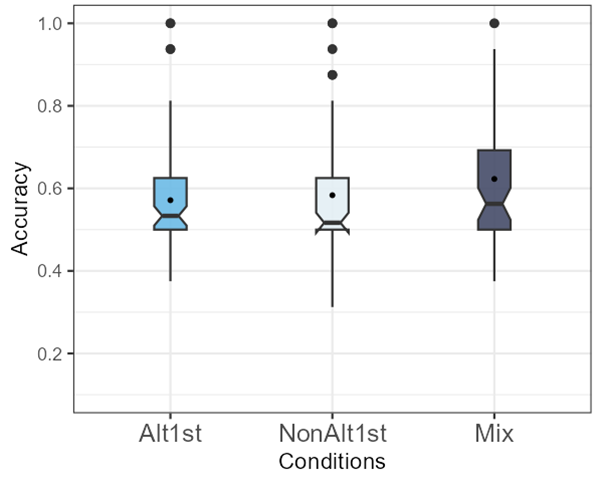
The trial types were categorized in 2 levels (total n 16= 2 levels × 8 items): itemAltlt, itemB-A. Figure 4-6 shows the accuracy of participants in the three conditions within different trial types to visualize how the distribution of participant responses in each training condition differ across the two trial types in this task and how trial type interacts with condition. The corresponding means (s.d.) are also presented in Table 4-3 along with example items. In the table, the highest mean value among conditions in each row (trial type) is underlined. The distribution of the two trial types is completely non-overlapping, however the participants in all conditions seem to perform similarly across trial types where all participant means within itemAlts are below 0.5 and all participant means within itemB-A are above 0.85.
| Trial Type | Alt1st | NAlt1st | Mix |
|---|---|---|---|
itemAlt (n= 8) [ditedæp] + [edæp] vs [tedæp] |
0.38 (0.30) | 0.41 (0.30) | [0.50 ( 0.31)]{.u nderline} |
itemB-A (n= 8) [mekisɑ] + [kisɑ] vs [isɑ] |
0.89 (0.15) | 0.89 (0.17) | [0.90 ( 0.13)]{.u nderline} |
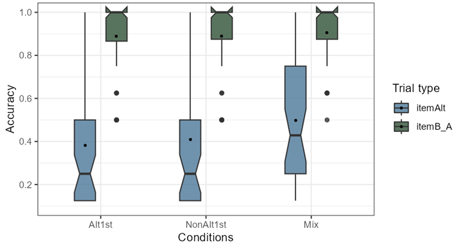
Figure 4-7 below shows the accuracy rate distributions of all participants in the three conditions to compare responses to trials that contained familiar items (n=12) against held-out items (n=4). As can be seen in the boxplots, similar to the previous task, the distribution of the responses to familiar and held-out items overlap in all conditions and their means are very close to each other.
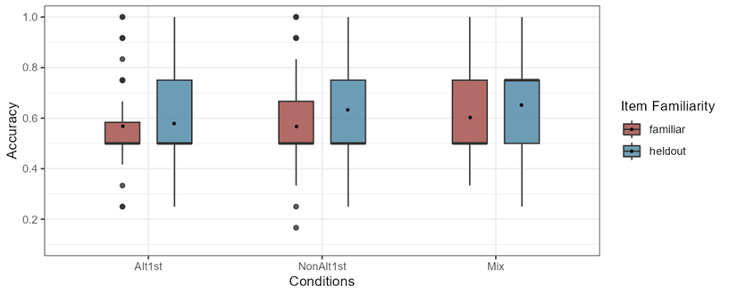
A mixed-effects logistic regression model with the following formula shown above in (1) including 4 fixed effects in addition to 2 random effects of intercept and slope for trial type by subject and intercept and slope for condition by item was fitted to the data.
The contrasts were treatment coded where training condition (Alt1st=ref, NAlt1st, Mix), trial type (itemAltlt=ref, itemB-A) and item familiarity (familiar=ref, held-out) and the interaction of condition and trial type was considered as fixed effects each with a reference level. The results showed only one significant coefficient estimate as the other variables are held constant on Alt1st and familiar items, the itemAltlt compared to the itemB-A were significantly worse (β=4.47, SE=0.41, p<0.001). The full model summaries can be found in the Appendix B2.
In the model comparisons with a chi-square likelihood ratio test, the model above (1) compared to a simpler model without the fixed effect of trial type (p=0) was significantly different, but not significantly improved compare to a model without the item familiarity and condition as fixed effects separately. It is worth noting that comparing the following model with a simpler model without interaction effects with a chi-square likelihood ratio test did not indicate significant improvement either. Nevertheless, using the emmeans package theoretically relevant interaction differences were calculated. As it is shown in the pairwise comparisons in Table 4-4, across all trial types the participants in NAlt1st and the Alt1st conditions are less accurate than Mix while participants in Alt1st are less accurate than NAlt1st. Although, none of the pairwise comparisons are statistically significant.
| Contrast | Trial type | Estimate | SE | z.ratio | p.value |
|---|---|---|---|---|---|
| Alt1st - NonAlt1st | itemAltlt | -0.21 | 0.44 | -0.47 | 1.00 |
| itemB_A | -0.61 | 0.50 | -1.22 | 0.67 | |
| NonAlt1st - Mix | item_A | -0.40 | 0.46 | -0.87 | 1.00 |
| itemB_A | -0.10 | 0.34 | -0.31 | 1.00 | |
| Alt1st - Mix | itemAltlt | -0.44 | 0.43 | -1.03 | 0.90 |
| itemB_A | -0.34 | 0.37 | -0.89 | 1.00 |
These comparisons can be viewed in Figure 4-8 which illustrates the predicted probability of a correct response from the mixed-effects logistic regression model. These probability values are averaged over the levels of item familiarity using marginal means. As can be seen from the lower point (colored in blue), the performance of participants on the itemAltlt trials is close to floor while their performance on itemB-A trials is close to the ceiling.
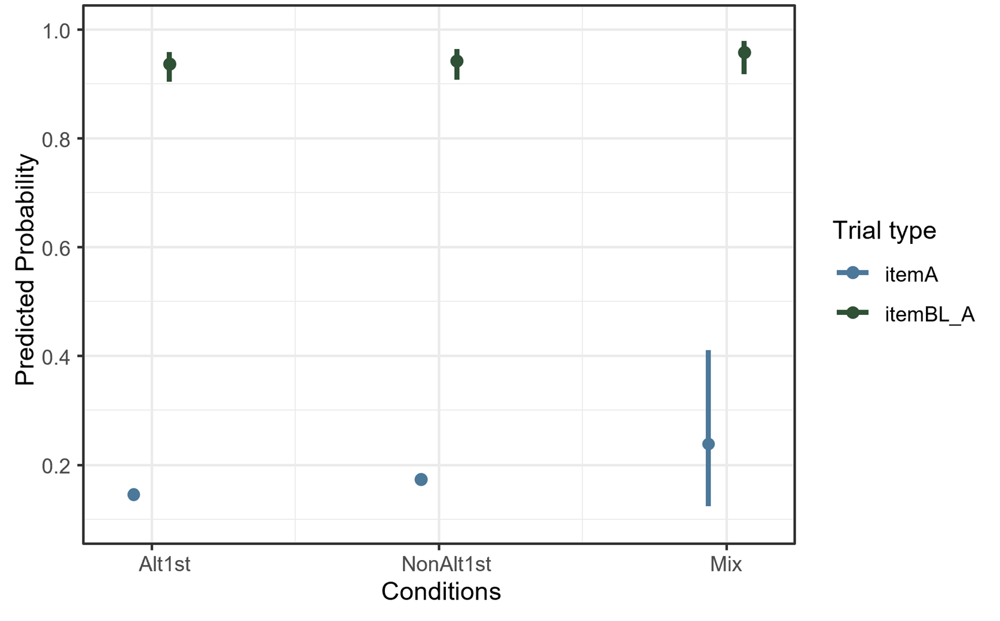
4.3 Task 3 - Novel Segmentation
The third 2AFC task was similar to the previous task except all the word2s were novel; therefore, the item familiarity variable is irrelevant here. To observe differences between the learning trajectories as hypothesized, the training conditions’ overall performances are compared in Figure 4-9 below. The means (SDs) of the participant means in the three conditions are almost at chance2: Alt1st 0.57 (0.14), NAlt1st 0.58 (0.16), and Mix 0.64 (0.17).

The trial types were categorized in 4 levels (total n 16 = 4 levels × 4 items): itemNonAlt, itemAltlt, itemB-A, itemB-NA. Figure 4-10 shows the accuracy of conditions within different trial types, to better understand how the distribution of participant responses in the three training conditions differs across different trial types in this task and how trial types interact with conditions. As can be seen in the boxplots, for all participants, the B items (two boxes on the right) have similar distributions and their means are above 0.8 whereas within the A and NonA items (two boxes on the left) there is more variability. The corresponding means (SD) are also presented in Table 4-5 along with an example item. In the table, the highest mean value among conditions in each row (trial type) is underlined.
| Trial Type | Alt1st | NAlt1st | Mix |
|---|---|---|---|
| itemNonAlt (n= 4) [kɑneʃin] + [eʃin] vs [neʃin] |
0.54 (0.29) | 0.63 (0.29) | [0.68 (0.32)] {.underline} |
itemAlt (n= 4) [ditɑjor] + [ɑjor] vs [tɑjor] |
0.55 (0.32) | 0.53 (0.28) | [0.63 (0.33)] {.underline} |
| itemB-A (n= 4) [mefærus] + [færus] vs [ærus] |
0.86 (0.24) | 0.89 (0.19) | [0.90 (0.19)] {.underline} |
| itemB-NA (n= 4) [lurunip] + [runip] vs [unip] |
0.88 (0.18) | 0.79 (0.23) | [0.89 (0.18)] {.underline} |
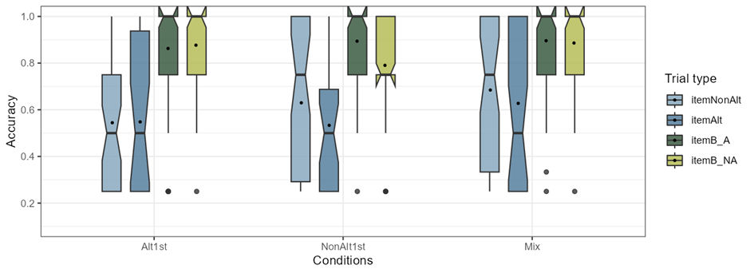
A mixed-effects logistic regression model with the following formula (2) including 3 fixed effects of condition, trial_type, and the interaction of condition and trial_type in addition to 2 random effects of intercept and slope by subject and intercept and slope by item was fitted to the data:
(2)
responses ~ condition + trial_type + condition:rial_type + (1 + trial_type | subject)
+ (1 + condition | item)
The contrasts were treatment coded where training condition (Alt1st=ref, NAlt1st, Mix), item type (itemNonAlt=ref, itemB-A, itemB-NA, itemAlt) and the interaction of condition and item type were considered as fixed effects each with a reference level. The results showed multiple significant coefficient estimates: when the other variables are held constant at their respective reference levels, that is on itemNonA trials, and familiar items, among the training conditions, participants in Alt1st were significantly less accurate than Mix (β=0.99, SE=0.49, p=0.05), and when the other variables are held constant at their respective reference levels, that is on Alt1st condition, and familiar items, among the item types, all differences were significant: participant responses to NonA were less than B-NA items (β=3.51, SE=0.44, p=0), responses to NonA was less than B-A items (β=4.04, SE=0.51, p=0), and responses to NonA was higher than A items (β=-1.72, SE=0.34, p=0). The full model summaries can be found in the Appendix B3.
In the model comparisons with a chi-square likelihood ratio test, the model above (2) once compared to a simpler model without the fixed effect of condition (p= 0.02) and once without the fixed effect of trial type (p=0) was significantly different. It is noteworthy that comparing the following model with a simpler model without interaction effects with a chi-square likelihood ratio test did not indicate significant improvement. Regardless, using the emmeans package theoretically relevant interaction differences were calculated. As it is shown in the pairwise comparisons in Table 4-6, across the itemNonAlt, itemAlt, itemB-A trial types the participants in the Alt1st conditions are less accurate than NonAlt1st and Mix. Although, none of the pairwise comparisons are statistically significant.
| Contrast | Trial type | Estimate | SE | z.ratio | p.value |
|---|---|---|---|---|---|
| Alt1st - NonAlt1st | itemNonAlt | -0.46 | 0.50 | -0.92 | 1.00 |
| itemAlt | -0.42 | 0.63 | -0.66 | 1.00 | |
| itemB_A | -0.27 | 0.50 | -0.53 | 1.00 | |
| itemB_NA | 0.73 | 0.35 | 2.11 | 0.10 | |
| Alt1st - Mix | itemNonAlt | -0.99 | 0.49 | -1.99 | 0.14 |
| itemAlt | -1.46 | 0.62 | -2.35 | 0.06 | |
| itemB_A | -0.16 | 0.49 | -0.31 | 1.00 | |
| itemB_NA | 0.06 | 0.35 | 0.16 | 1.00 | |
| NonAlt1st - Mix | itemNonAlt | -0.53 | 0.50 | -1.05 | 0.88 |
| itemAlt | -1.05 | 0.62 | -1.68 | 0.28 | |
| itemB_A | 0.11 | 0.50 | 0.22 | 1.00 | |
| itemB_NA | -0.68 | 0.33 | -2.05 | 0.12 |
These comparisons can be viewed in Figure 4-11 which illustrates the predicted probability of accuracy on the task, based on population-level predictions from the mixed-effects logistic regression model.
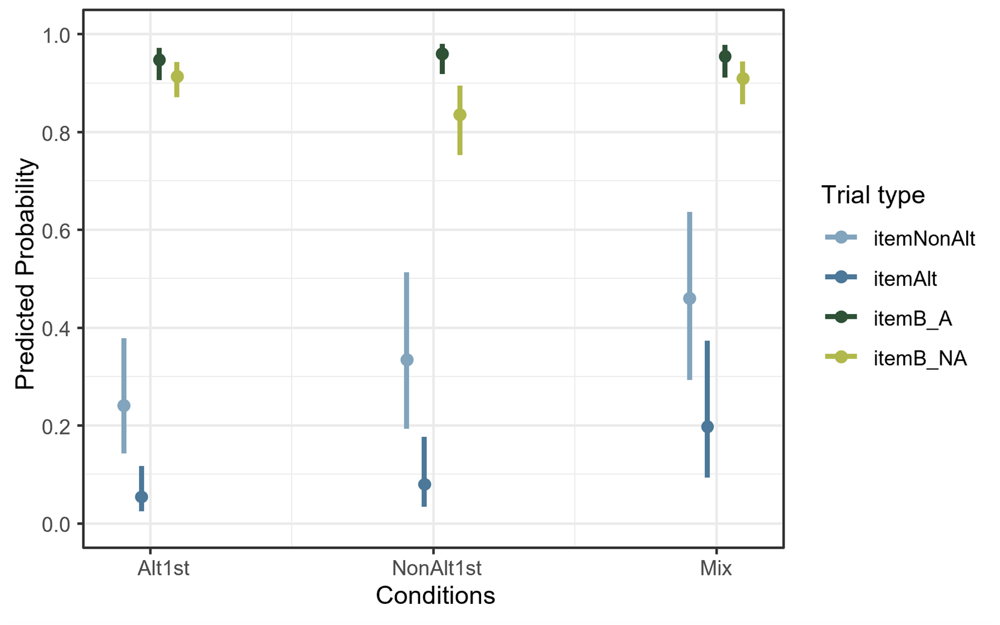
4.4 Task 2 and 3 - Both Segmentation Tasks
In sections 4.2 and 4.3 the two segmentation tasks were analyzed separately. To analyze both tasks together, the trial types are categorized based on the word2s. In order to test if different word2 types have a statistically significant effect on participants’ performance, the trials are categorized in terms of whether the intended word2 in the phrase was C-initial or V-initial. This is equivalent to merging the itemAlt and itemNonAlt levels under the V-initial trials and merging itemB-A and itemB-NA levels together under the C-initial trials. Item familiarity has 3 levels here, familiar (phrases that occurred in training), held-out (phrases that did not occur training but the word1s and word2s appeared in training individually), and novel (phrases that did not occur in training because the word2s were absent in training), unlike the previous models.
A mixed-effects logistic regression model with the following formula (3) including fixed effects of condition, trial type (based on word2), item familiarity, and the interaction of condition and trial type in addition to 2 random effects of intercept and slope by subject and intercept and slope by item was fitted to the data:
(3)
responses ~ condition + trial_type + condition:trial_type + item_familiarity + (1 + trial_type | subject) + (1 + condition | item)
The contrasts were treatment-coded where training condition (Alt1st=ref, NAlt1st, Mix), trial types were divided into 2 levels based on their word2 shape (C-initial=ref, V-initial) and item familiarity in 3 levels (familiar=ref, held-out, novel) and the interaction of condition and trial type as fixed effects each with a reference level. The results showed only one significant coefficient estimatewhen the other variables are held constant on Alt1st condition, and familiar items, the C-initial word2s were more accurate than V-initial word2s (β=-4.24, SE=0.40, p=0). Figure 4-12 illustrates the predicted probability of accuracy on both segmentation tasks responses combined. These probability values are averaged over the levels of item familiarity using marginal means.
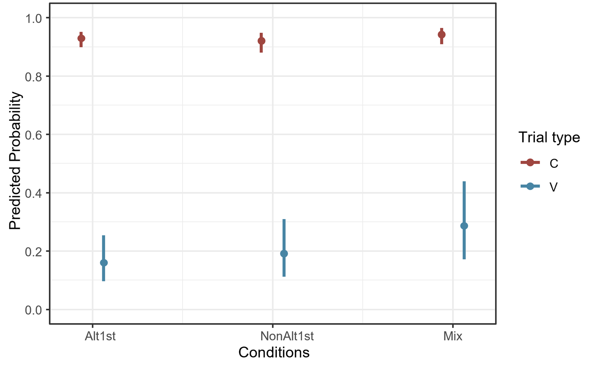
In the model comparisons with a chi-square likelihood ratio test, a model with 3 fixed effects once compared to a simpler model without the fixed effect of trial type (p=0) was significantly different and once without the fixed effect of condition was nearly significant (p=0.05), but not significantly different without the item familiarity. The model above (3) was not significantly improved compared to a model without interaction effect. The full model summaries can be found in the Appendix B4.
The term “at chance” here refers to a descriptive chance level of accuracy (8/16 trials). The binomial test was not used anymore to determine if this accuracy is significantly below or above chance level.↩︎
The term “at chance” here refers to a descriptive chance level of accuracy (8/16 trials). The binomial test was not used anymore to determine if this accuracy is significantly below or above chance level.↩︎